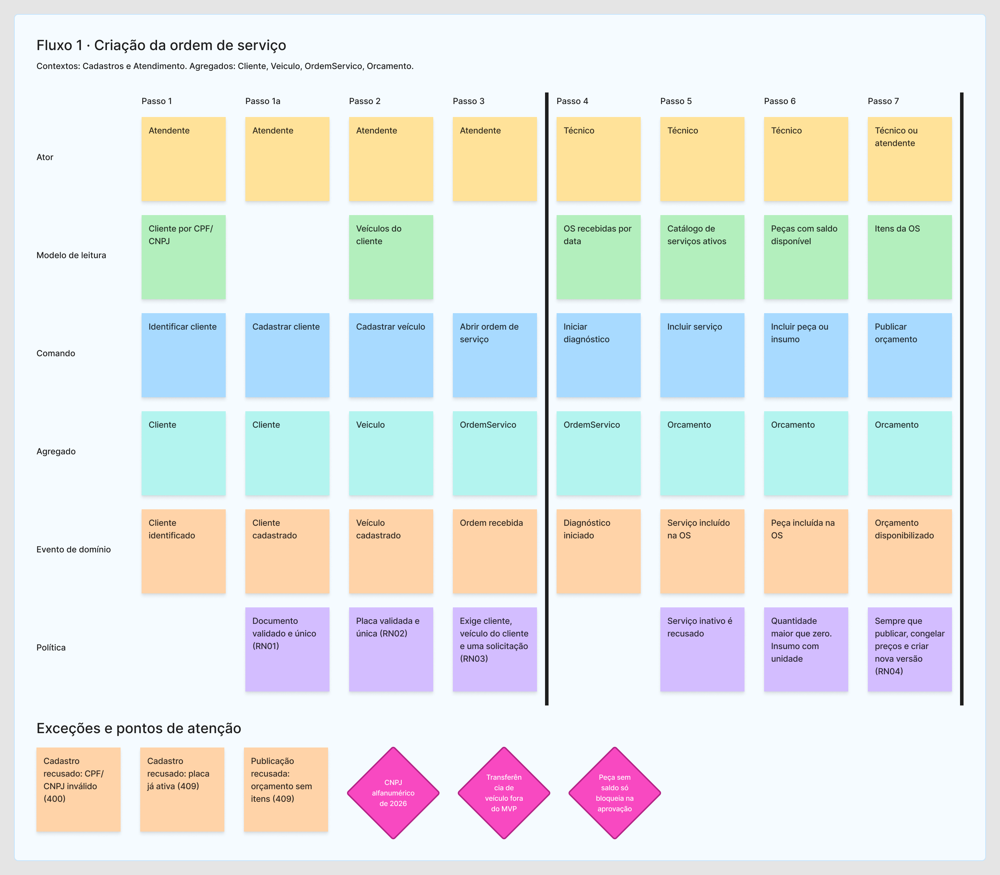
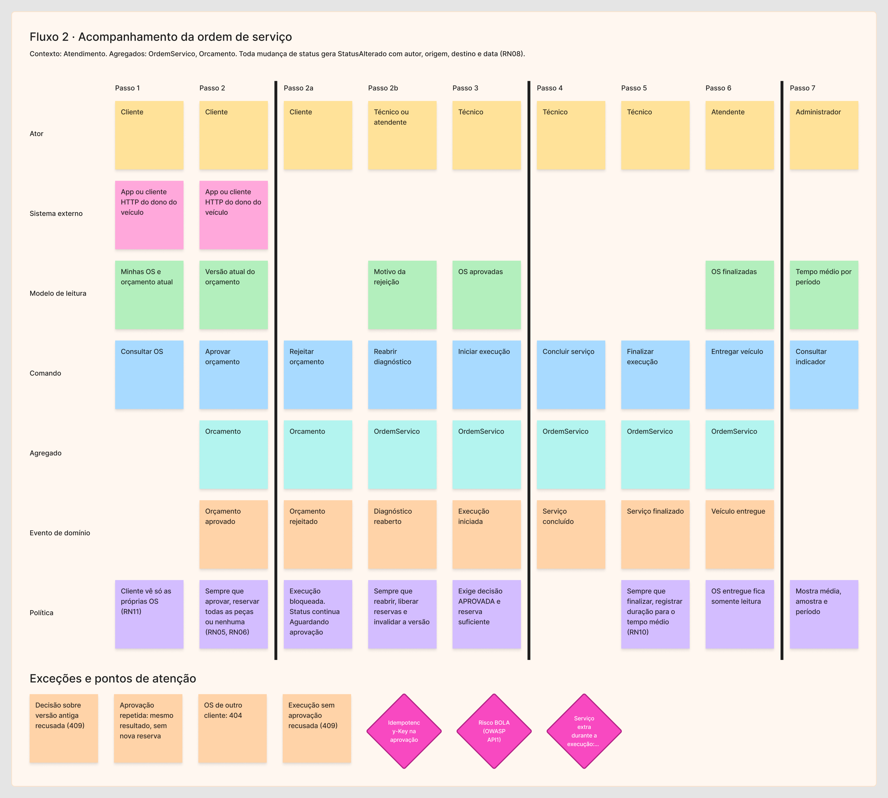
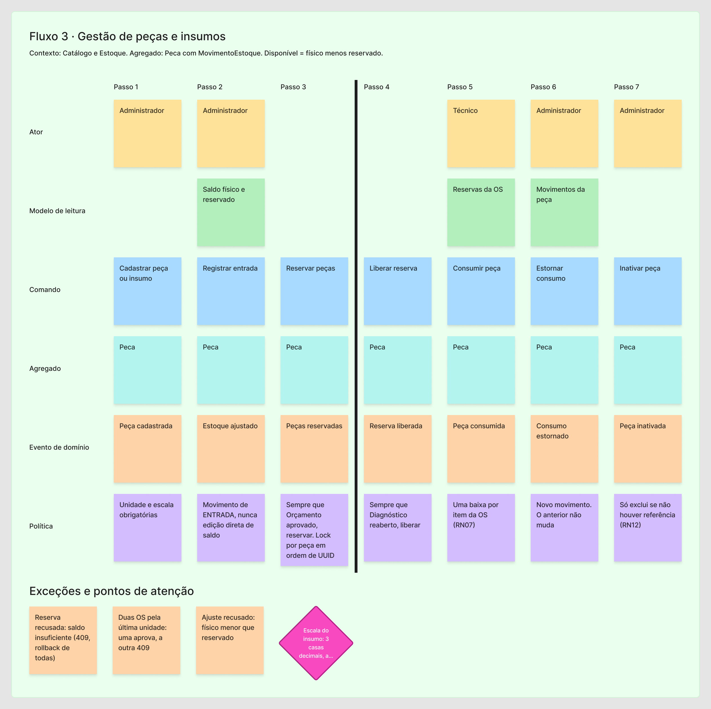

FIAP · SOAT Software Architecture · Fase 1 · Grupo 144
Sistema integrado de atendimento e execução de serviços para oficina mecânica
Back-end monolítico em camadas, com DDD, que controla ordem de serviço, orçamento, aprovação do cliente e estoque de peças. Este portal reúne o plano, os diagramas, o vídeo, as referências e o PDF da entrega.
O problema da oficina
Atendimento, diagnóstico, execução e entrega correm em anotações à mão e planilhas. Disso saem cinco falhas que o sistema precisa eliminar:
Prioridade errada
Sem fila única, o atendimento segue quem pergunta mais alto.
Estoque sem controle
Peça prometida no orçamento falta na hora da execução.
Status invisível
O cliente liga para saber em que pé está o carro.
Histórico perdido
Cliente e veículo não carregam o que já foi feito.
Aprovação solta
Orçamento e autorização circulam por mensagem, sem versão.
Ciclo da ordem de serviço
Mudança de status só por comando, revalidada dentro da transação.
Rejeição mantém a OS em Aguardando aprovação com a execução bloqueada. Reabrir o diagnóstico libera as reservas e gera nova versão do orçamento. Aprovar reserva o estoque, e iniciar a execução é um comando separado.
Arquitetura do monólito
Dependência sempre de fora para dentro.
Cadastros
Cliente, Veículo. Objetos de valor DocumentoFiscal e Placa.
Atendimento
OrdemServico, Orcamento, histórico de status.
Catálogo e Estoque
ServicoCatalogo, Peca, MovimentoEstoque, reservas.
Identidade e Acesso
Usuários, perfis ADMIN, ATENDENTE, TECNICO, CLIENTE.
Documentação DDD exigida
Confirmada pelo professor no fórum da turma.
Event Storming montado
Criação da OS, acompanhamento da OS, peças e insumos. Com exceções e eventos pivotais. PDF
Linguagem ubíqua pronta
Termos da oficina com o nome de cada um no código e no banco, conferidos contra o código implementado. Glossário
C4 níveis 1 a 3 pronto
Contexto, contêineres e componentes do cenário de aprovação do orçamento, gerados de PlantUML. PDF
Legenda do Event Storming
Quadros


Fluxo 1 · Criação da OS

Fluxo 2 · Acompanhamento da OS

Fluxo 3 · Peças e insumosC4


Vídeo da entrega
Até 15 minutos, público no YouTube.
assets/js/config.js.Links da entrega
Os mesmos que vão no PDF oficial.